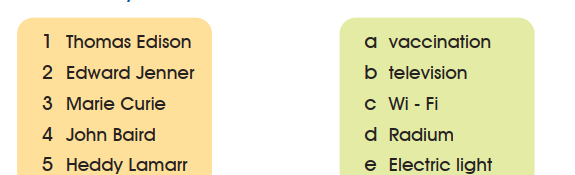
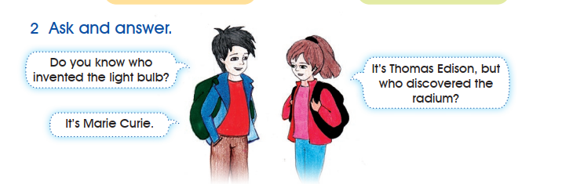
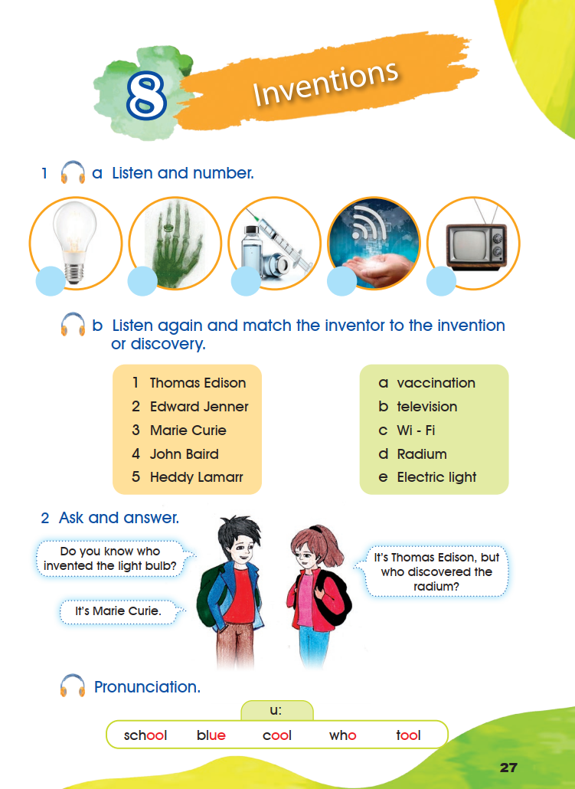
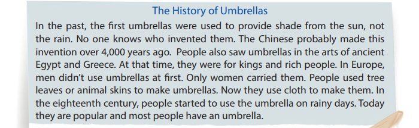
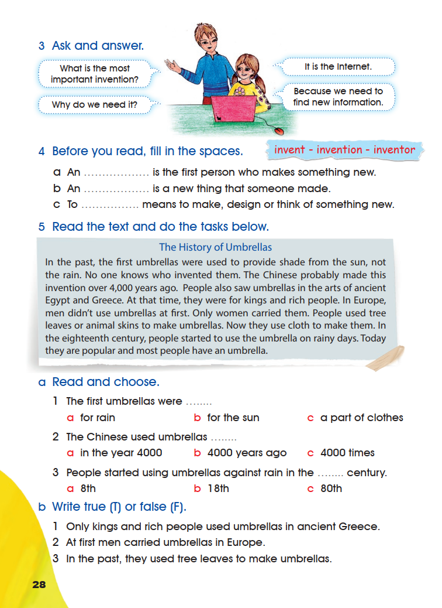
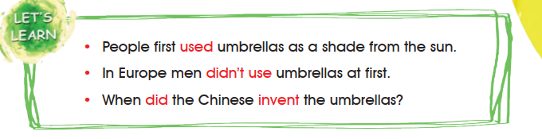
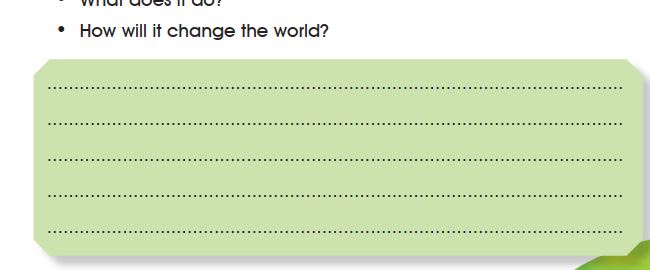
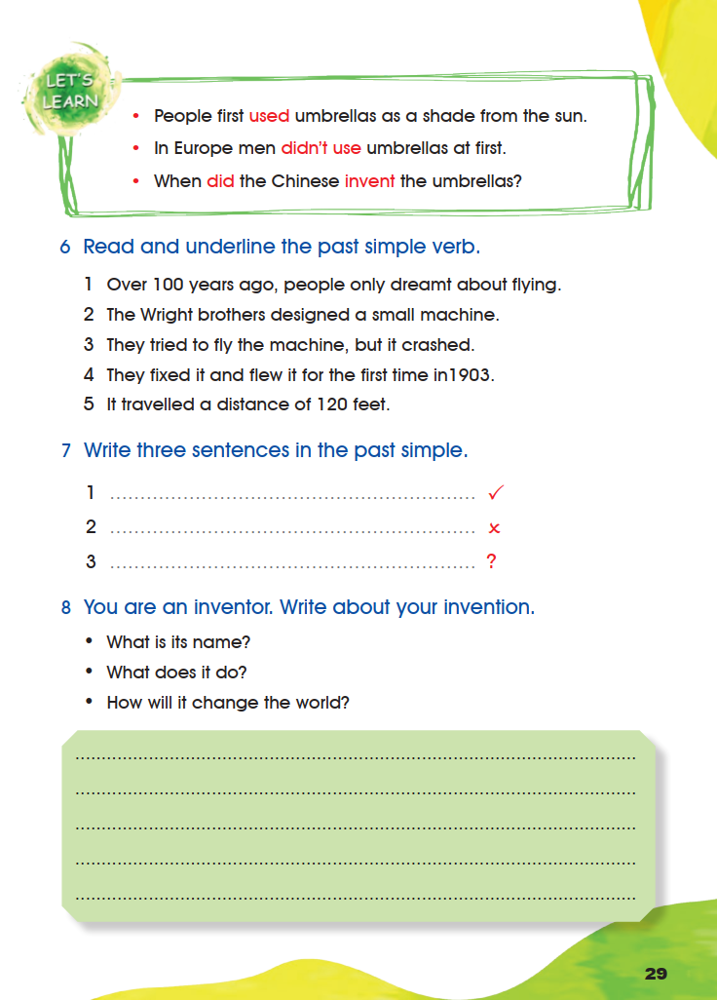

Pupil’s Book — Inventions
Activities 1–8 and the Pronunciation box appear in their original order across pages 27–29, with the green grammar box in its printed place. Listening notes are kept separate from the book’s wording.
1 a Listen and number.
- Picture 1 · light bulb
- Picture 2 · radiograph of a hand
- Picture 3 · syringe and vial
- Picture 4 · hand with a Wi-Fi icon
- Picture 5 · television set
The circles are printed empty on the page. Nothing on this page states which number belongs to which picture.
0 of 5 answered.
b Listen again and match the inventor to the invention or discovery.

Inventors
- Thomas Edison
- Edward Jenner
- Marie Curie
- John Baird
- Heddy Lamarr
Invention or discovery
- a vaccination
- b television
- c Wi - Fi
- d Radium
- e Electric light
The fifth name is printed Heddy Lamarr on this page, with a double d. The same inventor is printed Hedy Lamarr, with a single d, on Workbook page 30. Each page keeps its own printed spelling; neither spelling has been changed to match the other. The item c is printed with spaces around the hyphen as Wi - Fi; Workbook page 28 prints it Wi-Fi.
0 of 5 answered.
2 Ask and answer.

Do you know who invented the light bulb?
It’s Thomas Edison, but who discovered the radium?
It’s Marie Curie.
This is a speaking task. The three bubbles are printed exactly as shown, including the wording the radium. The page prints no key for it.
Pronunciation.
u:
- school
- blue
- cool
- who
- tool
1 a Listen and number is decided by the recording. The recording was not supplied, so this page keeps the five pictures and their five empty circles and provides no order.
1 b Listen again and match is also decided by the recording. The pairings printed elsewhere in this lesson are: Thomas Edison — Electric light; Edward Jenner — vaccination; Marie Curie — Radium; John Baird — television; Heddy Lamarr — Wi - Fi. Those five pairings are supported by Workbook page 28 exercise 2, Workbook page 29 exercise 4 and Workbook page 30 exercise 8, not by this page’s recording. No pairing is marked correct here.
2 Ask and answer and Pronunciation are speaking tasks; the page prints no key for them.
Nothing on this page is marked correct or incorrect. Choosing or typing an answer only stores your own attempt on this browser.
Open the source page · Pupil’s Book · p. 27
This is the original supplied image, shown without redrawing or generation.

3 Ask and answer.
What is the most important invention?
Why do we need it?
It is the Internet.
Because we need to find new information.
This is a speaking task built on the printed picture of a boy and a girl with a laptop. The four bubbles are printed as shown. The page prints no key.
4 Before you read, fill in the spaces.
- invent
- invention
- inventor
- a
An is the first person who makes something new.
- b
An is a new thing that someone made.
- c
To means to make, design or think of something new.
0 of 3 filled.
5 Read the text and do the tasks below.

The History of Umbrellas
In the past, the first umbrellas were used to provide shade from the sun, not the rain. No one knows who invented them. The Chinese probably made this invention over 4,000 years ago. People also saw umbrellas in the arts of ancient Egypt and Greece. At that time, they were for kings and rich people. In Europe, men didn’t use umbrellas at first. Only women carried them. People used tree leaves or animal skins to make umbrellas. Now they use cloth to make them. In the eighteenth century, people started to use the umbrella on rainy days. Today they are popular and most people have an umbrella.
a Read and choose.
- 1
The first umbrellas were …….
- 2
The Chinese used umbrellas …….
- 3
People started using umbrellas against rain in the ……. century.
0 of 3 answered.
b Write true (T) or false (F).
- 1
Only kings and rich people used umbrellas in ancient Greece.
- 2
At first men carried umbrellas in Europe.
- 3
In the past, they used tree leaves to make umbrellas.
0 of 3 answered.
4 Before you read, fill in the spaces: a inventor · b invention · c invent.
5 a Read and choose: 1 b for the sun · 2 b 4000 years ago · 3 b 18th.
5 b Write true (T) or false (F): 1 T · 2 F · 3 T.
Every answer in activity 4 is fixed by the printed word box. Every answer in activity 5 is stated in the printed text. Item 5 b 1 is a paraphrase of “At that time, they were for kings and rich people.”
Open the source page · Pupil’s Book · p. 28
This is the original supplied image, shown without redrawing or generation.

Let’s Learn

- People first used umbrellas as a shade from the sun.
- In Europe men didn’t use umbrellas at first.
- When did the Chinese invent the umbrellas?
6 Read and underline the past simple verb.
- 1
Over 100 years ago, people only dreamt about flying.
- 2
The Wright brothers designed a small machine.
- 3
They tried to fly the machine, but it crashed.
- 4
They fixed it and flew it for the first time in1903.
- 5
It travelled a distance of 120 feet.
Sentence 4 is printed with the year run onto the word, as in1903. It is reproduced as printed rather than corrected.
0 of 5 filled.
7 Write three sentences in the past simple.

0 of 3 filled.
8 You are an inventor. Write about your invention.
- What is its name?
- What does it do?
- How will it change the world?
0 of 1 filled.
6 Read and underline the past simple verb: 1 dreamt · 2 designed · 3 tried and crashed · 4 fixed and flew · 5 travelled.
7 Write three sentences in the past simple: this is personal writing and the page prints no key. The three markers ✓, ✗ and ? are printed beside the lines but the page does not say what they mean; the most likely reading is a positive sentence, a negative sentence and a question, and that reading is an inference, not a printed instruction. Illustrative examples only: 1 My grandfather used a radio. · 2 People didn’t have mobile phones. · 3 Did they travel by train?
8 You are an inventor. Write about your invention: this is creative writing and the page prints no key. Illustrative example only, not a unique answer: My invention is called the Rain Box. It collects rain water and keeps it clean. It will help families who have no water in summer.
The answers in activity 6 are the past simple verbs printed in those five sentences. Activities 7 and 8 are open writing: the examples above are illustrations, not correct answers.
Open the source page · Pupil’s Book · p. 29
This is the original supplied image, shown without redrawing or generation.
